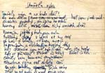
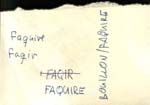
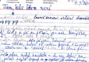

|
retrokruh krvik totr |
|
retrokruh krvik totr |
|
  |
|
1996: Krvik Totr dokonèili Naše Rádio III., které poprvé tvoøily zcela vlastní materiály. |
|
Díky za ka�dou novou ránu • mp3 Petr
(do úvodní hudby): Omezenci limited uvádí... Tomáš:
Díky za ka�dou novou ránu. Frıd
(cituje Nietzscheho): Pohlédnìme si do oèí. Jsme Hyperborejci - víme
a� pøíliš dobøe: to vìdìl o nás u� Pindaros. Mimo sever, mimo
led, mimo smrt - náš �ivot,
naše štìstí... Kdo jinak je? - Moderní èlovìk snad? - "Nevím, kudy kam, jsem vším,
co neví, kudy kam" - vzdychá moderní èlovìk... Ano a Ne.
Tato tolerance a largeur srdce, to� pro nás scirocco. Radìji v ledu
�ít ne�li mezi jinımi ji�ními
vìtry!... Zachmuøili jsme se, øíkali nám fatalisté. Naše
fatum - to byla plnost, napìtí, nadr�ení sil. �íznili
jsme po blesku a èinech, nikdy jsme se nepøiblí�ili štìstí
slabochù, "oddanosti"... Bouøe byla v našem vzduchu, pøíroda
- a my jsme pøíroda - se zatemnìla -, nebo�
nemìli jsme cesty. Formule našeho štìstí: jasné Ano, Ne, pøímá
linie, cíl... Rich:
Slyšíš ho? Nee
È Che: Jo. Frıd
(dostane ránu): Díky! ("Tøísk!")
Díky! ("Tøísk!")
Díky! ("Tøísk!")
Díky! ("Tøísk!")
Díky! ("Tøísk!")
Díky! ("Tøísk!")
Díky! ("Tøísk!")
Díky! ("Tøísk!")
Díky!
Vypravìè
An: V nemocnici.
MUDr.
Tik (povzdechne si): Sestøièko, pøineste baseballovou pálku. Rist:
Chcete pøipálit? Hihihi. Frıd
(dostane ránu): Díky! MUDr.
Tik: Tep? Rist:
63 za minutu. Frıd
("Tøísk!"): Díky!
MUDr.
Tik: Tep? Rist:
54 za minutu. Frıd
("Tøísk!"): Díky!
MUDr.
Tik: Tep? Rist:
45 za minutu. Frıd
("Tøísk!"): Díky!
MUDr.
Tik: Tep? Rist:
36 za minutu. Frıd
("Tøísk!"): Díky!
MUDr.
Tik: Tep? Rist:
27 za minutu. Frıd
("Tøísk!"): Díky!
MUDr.
Tik: Tep? Rist:
18 za minutu. Frıd
("Tøísk!"): Díky!
MUDr.
Tik: Tep? Rist:
9 za minutu. Frıd
("Tøísk!"): Díky!
MUDr.
Tik: Tep? Rist:
Nula. Oba:
Díky bohu! (Odejdou)
(Závìreèná
hudba. Do toho:) Tomáš:
Hráli. Petr:
Frıd, Rich, Nee È
Che, An, MUDr. Tik, Rist: Petr Novotnı a Tomáš Kout. Tomáš: Titulky. Re�ie. Asistent re�ie. Námìt a scénáø. Dramaturg. Produkce. Asistent produkce. Zvuk. (Hudba skonèí.) Frıd
("Tøísk!"): Díky!
Úvodní text © Friedrich Nietzsche (Antikrist) © 1996 Krvik Totr Music |
Z dobového tisku: Kábrt
si nakrk kotník Promiòte
chybu v titulku – správnì mìl znít: Kábrt si dal na krk
kotník. Ano – v tak zubo�eném stavu jsou ji� Krvici, �e
nevìdí, co se svım tìlem. Nahrávají jedno album za druhım a èas
na sebe si nenajdou, leda kdy� si dá Kábrt na krk kotník. Pak se
teprve zastaví a zasmìjí, ale u� zase je tøeba pracovat. Rozumìjte
– Kábrt, to je stálı host všech dosavadních desek (tedy jen tìch
od Krvik Totr, s Beatles dosud nehrál – a jak to tak, Johne,
vidím, ani si nezahraje) Filip Votava. Líní Krvik Totr dali tomuto
candátu hlavní úlohu v Našem Rádiu, šoupli mu šéfa – a
tak ten mluví a mluví, zatímco Krvici línì pøe�vykují bubble
gum. Kábrt u� mluvit nemù�e, horké mlíko u� nepomáhá, šátky
u� nepomáhají, léky u� nepomáhají (zvláštì úèinek náplasti
pøes pusu byl dokonce zcela opaènı!) – nu�e, zoufalı Kábrt,
tlaèen podmínkami ïábelské smlouvy Krvik Totr, si dal na krk kotník.
A ono to jde! Vidíte, vše
se v dobré obrátí. |
© 2003 Krvik Totr Limity.